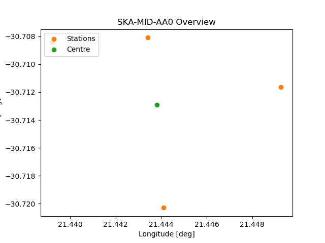
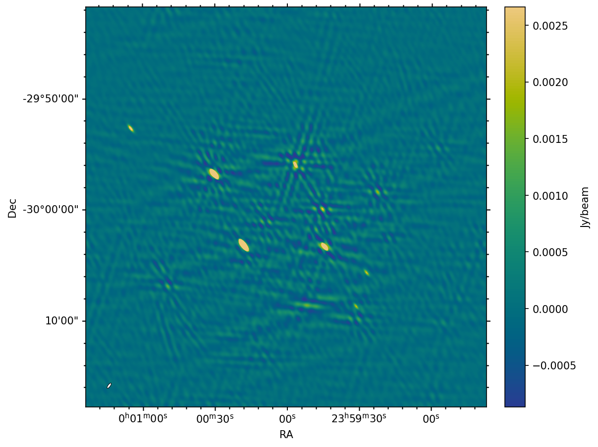
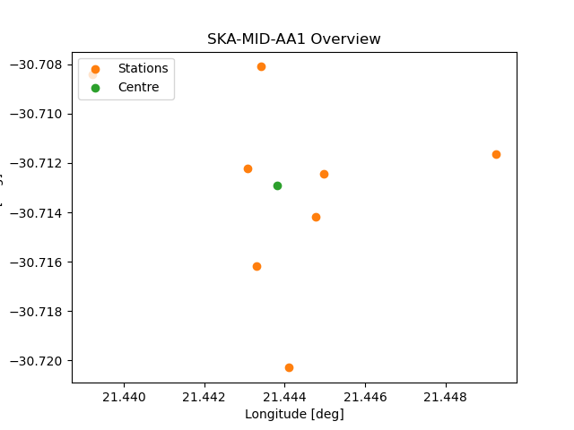
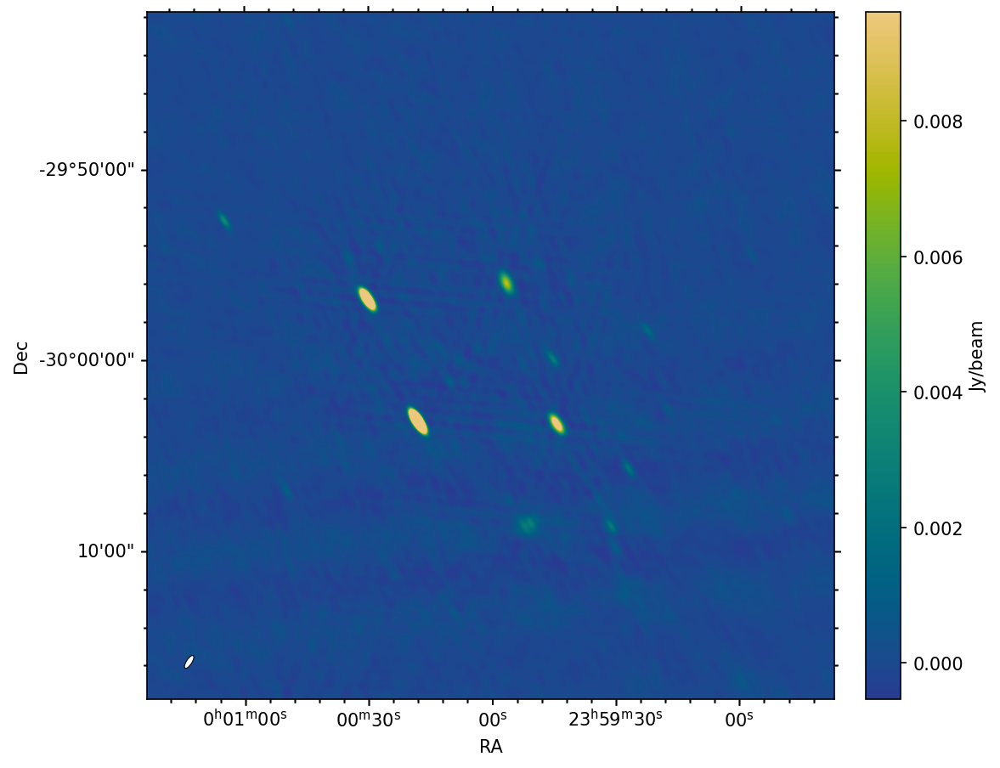
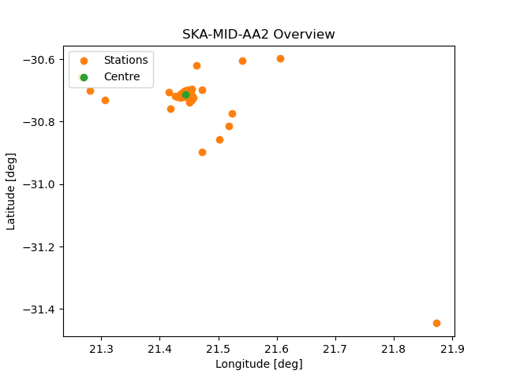
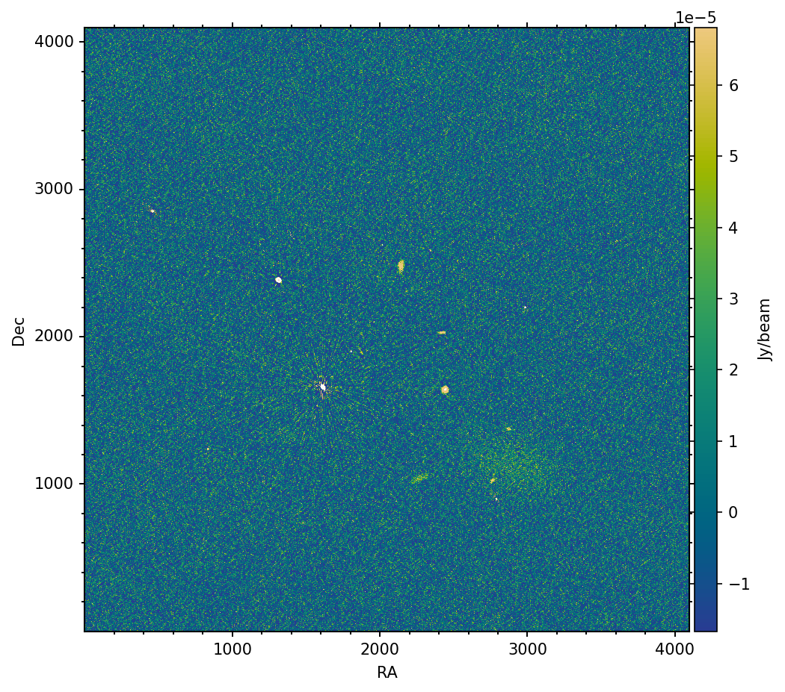
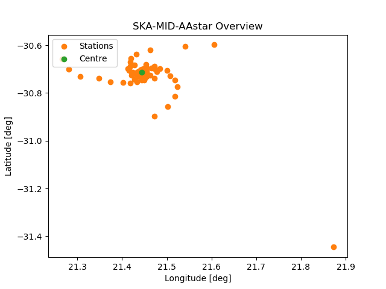
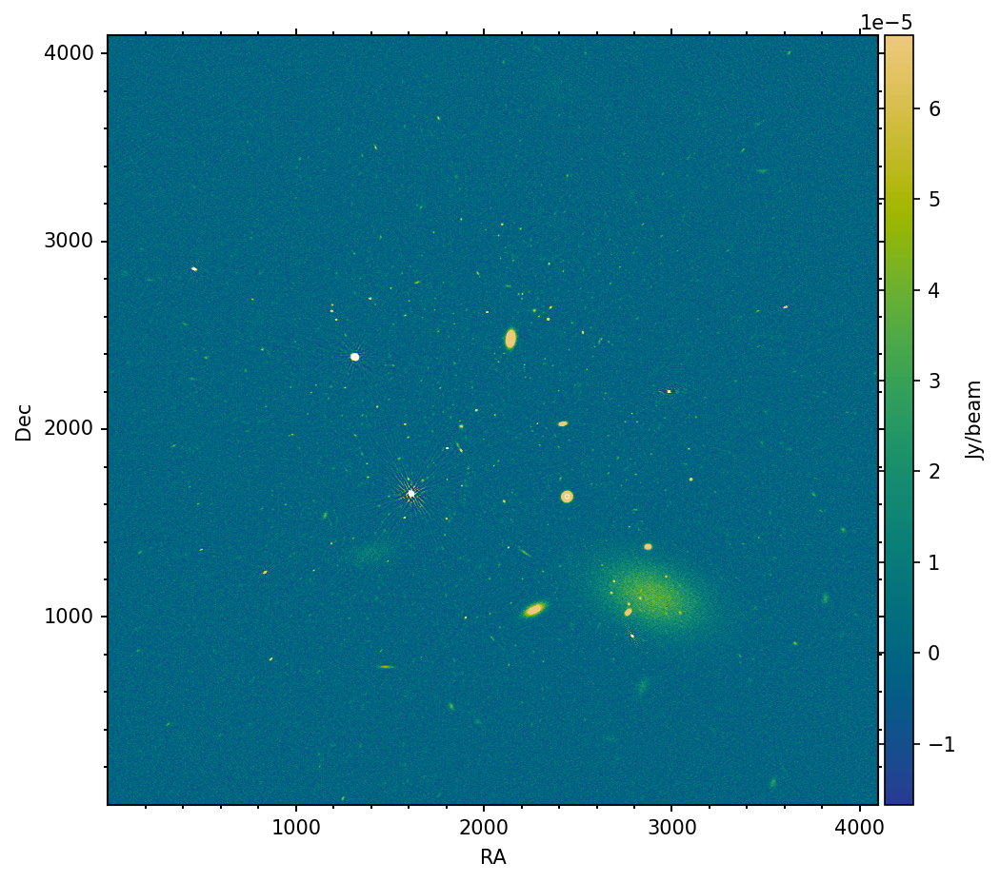
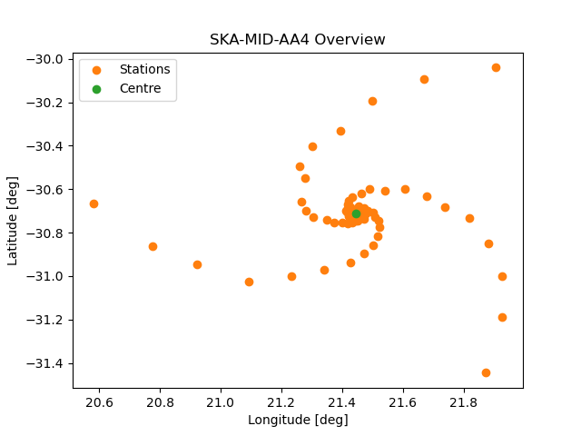

Introduction & Strategy
The SKA telescopes are being deployed through a staged delivery model. Construction is split into five chronological stages, known as Array Assemblies: AA0.5, AA1, AA2, AAstar, and AA4. All observations in this case were carried out in SKA-MID Band 2 (950–1670 MHz), with a central frequency of 1310 MHz and 720 MHz of bandwidth.
- AA0.5 & AA1: Commissioning and early verification, expanding the array from a minimal antenna set to a configuration capable of first imaging tests.
- AA2 & AA* (AAstar): Science Verification stages. AA2 delivers a scientifically competitive facility and invites the community to propose SV targets; AA* is the currently planned SKA, supporting all observing modes at a level that enables transformational science.
- AA4: Going beyond the current plan, the full design baseline delivering maximum sensitivity, resolution, and complete observing capability.
Array Assembly 0.5 (AA0.5)
The initial stage of the SKAO deployment, designed to test core functionality and system integration. This minimal array enables early technical verification before scaling up the telescope structure.


Array Assembly 1 (AA1)
Following successful verification, AA1 expands the array slightly, allowing preliminary imaging capabilities. At this stage, the array starts laying down the foundations for more extended baseline configurations.


Array Assembly 2 (AA2)
By the end of AA2, the SKA telescopes become scientifically competitive. This marks an important milestone where the scientific community will be invited to submit suggestions for Science Verification targets.


Array Assembly Star (AA*)
An intermediate target introduced to handle budgetary realities. While it contains fewer Mid dishes and Low stations than the full design, AA* will support all planned observing modes and give researchers access to an extremely powerful facility ahead of final completion. The layout shown here contains 144 stations.


Array Assembly 4 (AA4 / Design Baseline)
The full design baseline of the SKAO project. AA4 will deliver the complete observing capabilities with maximum sensitivity and resolution across all frequency bands, completing the transition from testing to a fully operational world-class observatory.


Key Takeaways
- Staged Implementation: Building the array in progressive stages lowers risk and enables early science capabilities prior to full completion.
- Evolving Performance: As we move from AA0.5 to AA4, the increase in stations and dishes dramatically improves image fidelity, UV coverage, and sensitivity.
- Early Science Access: AA2 and AA* are designed specifically to provide the scientific community with early, scientifically competitive data.
Performance Summary
Comparison of the five array assemblies for the same SDC1 field and imaging setup. Beam values quote the smallest axis (BMIN) of the restored beam.
| Assembly | Stations | RMS (μJy/beam) | Beam (arcsec) |
|---|---|---|---|
| AA0.5 | 4 | 177.52 | 12.35 |
| AA1 | 8 | 153.20 | 16.94 |
| AA2 | 64 | 20.16 | 1.66 |
| AA* | 144 | 5.48 | 2.79 |
| AA4 | 197 | 4.96 | 2.54 |